화학분석기사(구) (2010-09-05 기출문제)
1과목: 일반화학
1. 한 수저는 금으로 도금하고, 다른 수저는 구리로 도금하고자 한다. 만약 발전기에서 나오는 일정한 전류를 두 수저를 도금하는데 사용하였다면, 어느 수저에 먼저 1g이 도금되고 그 이유는 무엇인가? (단, 금의 원자량은 197, 구리의 원자량은 63.5이며, 반쪽 환원 반응식은 다음과 같다.)
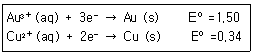
- 금 수저-금의 분자량이 더 크기 때문이다.
- 금 수저-금이 더 많은 전자로 환원되기 때문이다.
- 구리수저-구리가 기전력이 더 낮기 때문이다.
- 구리수저-구리가 더 적은 전자로 환원되기 때문이다.
(정답률: 71%)

2. 질량백분율 10.0% NaCl 수용액의 몰랄농도는 얼마인가? (단, NaCl의 물질량은 58.44g/mol 이다.)
- 0.171m
- 1.71m
- 0.19m
- 1.9m
(정답률: 71%)
3. KNO3 1.345g을 녹여 25.00mL 수용액을 만들었다. 이 용액의 몰 농도는? (단, K의 원자량은 39이다.)
- 1.1345M
- 1.3450M
- 0.2690M
- 0.5327M
(정답률: 73%)
4. 어떤 물질의 화학식이 C2H2ClBr로 주어졌고, 그 구조가 다음과 같을 때에 대한 설명으로 틀린 것은?
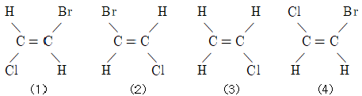
- (1)과 (2)는 동일 구조이다.
- (2)과 (4)는 동일 구조이다.
- (2)과 (3)는 기하 이성질체 관계이다.
- (3)과 (4)는 동일 구조이다.
(정답률: 79%)
5. HCIO의 명칭은 무엇인가?
- 염소산
- 과염소산
- 아염소산
- 하이포아염소산
(정답률: 83%)
6. 다원자 이온에 대한 명명 중 옳지 않은 것은?
- CH3COO-:아세트산이온
- NO3-:질산이온
- SO32-:황산이온
- HCO3-:탄산수소이온
(정답률: 70%)
7. 고리구조를 갖지 않는 어떤 화합물의 화학식이 C4H8일 경우 이 물질이 갖는 이성질체수는 모두 몇 개인가?
- 2개
- 3개
- 4개
- 5개
(정답률: 68%)
8. 주기율표에서의 일반적인 경향으로 옳은 것은?
- 원자 반지름은 같은 족에서는 위로 올라갈수록 증가한다.
- 원자 반지름은 같은 주기에서는 오른쪽으로 갈수록 감소한다.
- 같은 주기에서는 오른쪽으로 갈수록 금속성을 증가한다.
- 0족에서는 금속성 물질만 존재한다.
(정답률: 83%)
9. 철은 철광석으로부터 다음 반응에 의해 형성된다고 할 때 Fe(s) 1mol을 형성하기 위해 필요한 O2(g)의 mol수는?
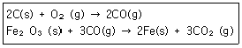
- 0.5
- 0.75
- 1
- 1.5
(정답률: 68%)
10. 밑줄 친 원자의 산화수를 잘못 나타낸 것은?
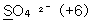
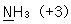
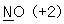
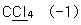
(정답률: 72%)
11. 배의 철 표면이 녹스는 것을 방지하기 위하여 종종 마그네슘 판을 붙인다. 이 작업을 하는 이유는?
- 마그네슘이 철보다 더 좋은 산화제이므로 마그네슘이 더 산화되기 쉽다.
- 마그네슘이 철보다 더 좋은 산화제이므로 마그네슘이 더 환원되기 쉽다.
- 마그네슘이 철보다 더 좋은 환원제이므로 마그네슘이 더 산화되기 쉽다.
- 마그네슘이 철보다 더 좋은 환원제이므로 마그네슘이 더 환원되기 쉽다.
(정답률: 78%)
12. 물질을 수용액에 녹였을 때의 성질이 틀린 것은?
- CO2-산성
- Na2O-염기성
- Na2CO3-산성
- N2O5-산성
(정답률: 53%)
13. 다음은 계수를 맞추지 않은 C5H12의 연소 반응식이다. C5H12 1몰을 연소하기 위해서는 산소가 몇 몰 필요한가?
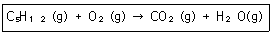
- 2
- 5
- 6
- 8
(정답률: 79%)
14. 어떤 반응의 평형상수를 알아도 예측할 수 없는 것은?
- 평형에 도달하는 시간
- 어떤 농도가 평형조건을 나타내는지 여부
- 주어진 초기농도로부터 도달할 수 있는 평형의 위치
- 반응의 진행 정도
(정답률: 84%)
15. 돌턴(Dalton)의 원자설에서 설명한 내용이 아닌 것은?
- 물질은 더 이상 나눌 수 없는 원자로 이루어져 있다.
- 원자가전자의 수는 화학결합에서 중요한 역할을 한다.
- 같은 원소의 원자들은 질량이 동일하다.
- 서로 다른 원소의 원자들이 간단한 정수비로 결합하여 화합물을 만든다.
(정답률: 74%)
16. 수소이온 농도 0.0001M의 pH는?
- 3
- 4
- 5
- 6
(정답률: 79%)
17. 메탄 2.80g에 들어있는 메탄 분자수는 얼마인가?
- 0.98×1022 분자
- 1.⑤×1023 분자
- 1.93×1022 분자
- 1.93×1023 분자
(정답률: 80%)
18. 전자들이 바닥상태에 있다고 가정할 때 질소원자에 대한 전자배치로 옳은 것은?
- 1s22s12p1
- 1s22s22p6
- 1s22s22p3
- 1s22s23p3
(정답률: 79%)
19. 벤젠을 실험식으로 옳게 나타낸 것은?
- C6H6
- C6H5
- C5H6
- CH
(정답률: 75%)
20. 다음 중 극성 분자가 아닌 것은?
- CCl4
- H2O
- CH3OH
- HCl
(정답률: 82%)
2과목: 분석화학
21. 다음 전기화학에 관한 설명으로 옳은 것은?
- 전자를 잃었을 때 산화되었다고 하며, 산화제는 전자를 잃고 자신이 산화된다.
- 전자를 얻게 되었을 때 산화되었다고 하며, 환원제는 전자를 얻고 자신이 산화된다.
- 볼트(V)의 크기는 쿨롱(C)당 주울(J)의 양이다.
- 갈바니 전지(galvanic cell)는 자발적인 화학반응으로부터 전기를 발생시키는 영구기관이다.
(정답률: 78%)
22. EDTA 적정에 사용되는 xylenol orange와 같은 금속이온 지시약의 일반적인 특징이 아닌 것은?
- pH에 따라 고유한 색을 나타낸다.
- 산화-환원제로서 전위(potential)에 따라 색이 다르다.
- 지시약은 EDTA보다 약하게 금속과 결합해야만 한다.
- 금속이온과 결합하면 색깔이 변해야 한다.
(정답률: 63%)
23. 0.1M 약염기 B(Kb=2.6×10-6) 100mL 수용액에 0.1M HNO3 50mL 수용액을 가했을 때의 pH는? (단, Kb는 염기해리상수이고 물의 해리상수는 1.0×10-14이다.)
- 5.74
- 7.00
- 8.41
- 9.18
(정답률: 63%)
24. 다음 수용액들의 농도는 모두 0.1M이다. 이온세기(ionic strength)가 가장 큰 것은?
- NaCl
- Na2SO4
- Al(NO3)3
- MgSO4
(정답률: 77%)
25. EDTA 적정에 일반적으로 사용되는 금속이온 지시약으로만 되어 있는 것은?
- 페놀프탈레인, 메틸오렌지
- 페놀프탈레인, EBT(Eriochrome Black T)
- EBT(Eriochrome Black T), 크실레놀오렌지(Xylenol orange)
- 크실레놀오렌지(Xylenol orange), 메틸오렌지
(정답률: 73%)
26. 산염기 적정을 할 때 사용하는 지시약에 대한 설명으로 틀린 것은?
- 적정의 종말점을 검출하기 위하여 색변화가 있는 지시약을 사용한다.
- 명확한 색변화를 위하여 가능한 많은 양의 지시약을 첨가한다.
- 관찰되는 종말점과 참 당량점의 차이를 지시약 오차라고 한다.
- 메틸 레드, 페놀 레드도 지시약으로 사용될 수 있다.
(정답률: 80%)
27. 약산인 HF(Ka=6.8×10-4)와 약산인 CH3COOH(Ka=1.8×10-5)에 대한 다음 반응식의 평형상수 값은 약 얼마인가?
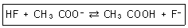
- 1.2×10-8
- 2.6×102
- 3.8×10
- 6.6×10-4
(정답률: 53%)
28. Fe2+이온을 Ce4+로 적정하는 반응에 대한 설명 중 잘못된 것은?
- 적정반응은 Ce4++Fe2+→Ce3++Fe3+ 이다.
- 전위차법을 이용한 적정에서는 반당량점에서의 전위는 당량점의 전위(Ve)의 약 1/2이다.
- 당량점에서 [Ce3+]=[Fe3+], [Fe2+]=[Ce4+]이다.
- 당량점부근에서 측정된 전위의 변화는 미세하여 정확한 측정을 위해 산화-환원 지시약을 사용해야 한다.
(정답률: 62%)
29. 할로겐 음이온을 0.⑤0M Ag+ 수용액으로 적정하였다. AgCl, AgBr, AgI의 용해도곱은 각각 1.8×10-18, 5.0×10-13, 8.3×10-17이다. 당량점이 가장 뚜렷하게 나타나는 경우는?
- 0.⑤M Cl-
- 0.10M Cl-
- 0.10M Br
- 0.10M I-
(정답률: 70%)
30. 질소와 수소로부터 암모니아를 만드는 반응에서 평형을 이동시켜 암모니아의 수득률을 높이는 방법이 아닌 것은?
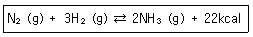
- 질소의 농도를 증가시킨다.
- 압력을 높인다.
- 암모니아의 농도를 증가시킨다.
- 수소의 농도를 증가시킨다.
(정답률: 73%)
31. 표준 수소 전극에서의 반응 및 표준 전위(E°)를 가장 옳게 나타낸 것은? (단, A는 각 성분의 활동도이다.)
- 2H+(A=1)+2e-⇄H2(A=2) E°=0.0V
- 2H+(A=2)+2e-⇄H2(A=1) E°=1.0V
- 2H+(A=1)+2e-⇄H2(A=1) E°=0.0V
- 2H+(A=2)+2e-⇄H2(A=2) E°=1.0V
(정답률: 70%)
32. EDTA에 대한 일반적인 설명 중 틀린 것은?
- 음이온과 강하게 결합하여 착물을 형성한다.
- 여섯 개의 리간드 자리를 가지고 있다.
- 4개의 카르복실 작용기를 포함하고 있다.
- pH 조절을 통해 금속이온의 선택성을 높일 수도 있다.
(정답률: 60%)
33. 특정 화학종이 녹아 있는 수용액의 전위차를 측정하기 위하여 두개의 백금전극이 다음 그림과 같이 담겨 있다. 그림을 가장 옳게 표시한 것은?
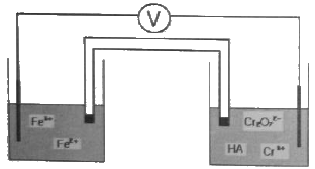
- Pt(s), Fe2+, Fe2+(aq), Fe3+(aq):Cr2O72-(aq), Cr3+(aq), HA(aq), Pt(s)
- Pt(s):Fe2+(aq), Fe3+(aq) | Cr2O72-(aq), Cr3+(aq), HA(aq):Pt(s)
- Pt(s) | Fe2+(aq), Fe3+(aq)║Cr2O72-(aq), Cr3+(aq), HA(aq) | Pt(s)
- Pt(s)║Fe2+(aq), Fe3+(aq) | Cr2O72-(aq), Cr3+(aq), HA(aq)║Pt(s)
(정답률: 83%)
34. MnO4- 이온에서 망간(Mn)의 산화수는 얼마인가?
- -1
- +4
- +6
- +7
(정답률: 79%)
35. CaF2의 용해와 관련된 반응식에서 과량의 고체 CaF2가 남아 있는 포화된 수용액에서 Caa2+(aq)의 몰 농도에 대한 설명으로 옳은 것은? (단, 용해도의 단위는 mol/L이다.)
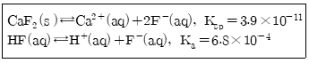
- KF를 첨가하면 몰 농도가 감소한다.
- HCl을 첨가하면 몰 농도가 감소한다.
- KCl을 첨가하면 몰 농도가 감소한다.
- H2O를 첨가하면 몰 농도가 증가한다.
(정답률: 72%)
36. 갈바니 전지(galcanic cell)의 염다리에 관한 설명 중 틀린 것은?
- 염다리는 KCl, KNO3, NH4Cl과 같은 염으로 채워져 있다.
- 염다리를 통하여 갈바니 전지는 전체적으로 전기적 중성이 유지된다.
- 염다리의 염용액 농도는 매우 낮다.
- 염다리에는 다공성 마개가 있어 서로 다른 두 용액이 서로 섞이는 것을 방지한다.
(정답률: 77%)
37. 메틸아민(Methylamine)은 약한 염기로, 염해리상수(Kb)값은 다음과 같은 평형식에서 구할 수 있다. 메틸아민의 짝산인 메틸암모니움 이온(Methylammonium ion)의 산해리상수(Ka)를 구하기 위한 화학평형식으로 옳은 것은?
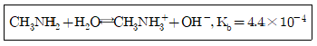
- CH3NH2⇄CH3N-H+H+
- CH3NH3++OH-⇄CH3NH2+H2O
- CH3NH2+OH-⇄CH3N-H+H2O
- CH3NH3+⇄CH3NH2+H+
(정답률: 59%)
38. 적정(titration)에 쓰이는 용어에 관한 설명으로 틀린 것은?
- 당량점(equivalence point)-적정 시약의 양이 분석물질과 화학량론적으로 반응하는데 꼭 필요한 만큼 가해졌을 때 일어난다.
- 종말점(end point)-용액의 물리적 성질이 갑자기 변하는 점이다.
- 지시약(indicator)-적정이 완결되는 부근에서 물리적 특성이 갑자기 변하는 화합물이다.
- 직접 적정(direct titration)-분석물질에 농도를 알고 있는 첫 번째 표준시약을 과량 가한 다음 두 번째 표준시약을 사용하여 과량의 첫 번째 표준시약을 적정하는 방법이다.
(정답률: 70%)
39. 금속착화합물(metal complex)에서 금속이온과 리간드간의 결합형태는 무엇인가?
- 금속결합
- 이온결합
- 수소결합
- 배위결합
(정답률: 76%)
40. 이양성자산(H2A)의 pKa1이 4.0이고, pKa2는 8.0이다. 1.0M의 이양성자산(H2A)의 pH는?
- 1.0
- 2.0
- 4.0
- 6.0
(정답률: 37%)
3과목: 기기분석I
41. 원자흡수분광법과 원자형광분광법에서 기기의 부분 장치 배열에서의 큰 차이점은 무엇인가?
- 원자흡수분광법은 광원 다음에 사료잡이가 나오고 원자형광분광법은 그 반대이다.
- 원자흡수분광법은 파장선택기가 광원보다 먼저 나오고 원자형광분광법은 그 반대이다.
- 원자흡수분광법에서는 광원과 시료잡이가 일직선상에 있지만 원자형광분광법에서는 광원과 시료잡이가 직각을 이룬다.
- 원자형광분광법은 레이저 광원을 사용할 수 없으나 원자형광분광법에서는 사용 가능하다.
(정답률: 83%)
42. 다음의 분자 흡수 특성 중 발색단과 전이형태 관계가 잘못된 것은?
- Alkene:π→π*
- Amido:π→σ*
- Carboxyl:n→π*
- Azo:n→π*
(정답률: 72%)
43. 분자의 들뜬 상태(excited state)에 대한 설명으로 틀린 것은?
- 적외선이 분자의 진동을 유발한 상태
- X-선이 분자를 이온화시킨 상태
- 분자가 마이크로파의 복사선을 흡수한 상태
- 분자가 광자를 방출하여 주변의 에너지 준위가 높아진 상태
(정답률: 81%)
44. 순수한 화합물 A를 녹여 정확히 10mL의 용액을 만들었다. 이 용액 중 1mL를 분취하여 100mL로 묽힌 후 250nm에서 0.50cm의 셀로 측정한 흡광도가 0.432이었다면 처음 10mL 중에 있는 시료의 몰농도는? (단, A의 물 흡광계수 ε=4.32×103M-1cm-1이다.)
- 1×10-2M
- 2×10-2M
- 1×10-3M
- 2×10-4M
(정답률: 75%)
45. 전열원자화 장치에 대한 설명으로 틀린 것은?
- 전열원자화 장치의 가열순서는 건조, 원자화, 회화단계 순서이다.
- 전열원자화 장치는 작업부, 전력부, 비활성기체 공급조절부로 구성된다.
- 전열원자화 장치의 로(Furnace) 주변은 물로 냉각하여 온도를 유지한다.
- 고온에서 흑연의 산화방지를 위해 비활성기체(아르곤)분위기에서 측정한다.
(정답률: 65%)
46. X-선 회절기기에서 토파즈(격자간격 d=1.356Å)가 회절결정으로 사용되는 경우 Ag의 Ka1 선인 0.497Å을 관찰하기 위해서는 측각기(goniometer) 각도를 몇 도에 맞추어야 하는가? (단, 2θ값을 계산한다.)
- 10.55
- 14.2
- 21.1
- 28.4
(정답률: 62%)
47. 다음 신호 중 일반적으로 광원의 세기에 비례하지 않는 것은?
- 라만 산란광의 세기
- 흡광도(absorbance)
- 형광의 세기
- 인광의 세기
(정답률: 74%)
48. 나트륨(Na) 기체의 전형적인 원자흡수 스펙트럼을 옳게 나타낸 것은?
- 선(line) 스펙트럼
- 띠(bond) 스펙트럼
- 연속(continuous) 스펙트럼
- 선과 띠의 혼합 스펙트럼
(정답률: 86%)
49. 분자 질량 분석법에서 진공의 손실을 최소화하면서 시료를 이온화원 지역으로 도입하기 위하여 사용되는 것이 아닌 것은?
- 직접 도입 장치
- 배치식 도입 장치
- 용해 증발 도입 장치
- 크로마토그래피 및 모세관 전기이동 도입 장치
(정답률: 66%)
50. FT-IR 기기와 관련 없는 장치는?
- 광원장치
- 단색화 장치
- 광검출기
- 미켈슨 인터페로미터
(정답률: 71%)
51. 270nm의 파장을 갖는 X선 광자의 광에너지는 약 몇 J인가?
- 7.37×10-17
- 7.37×10-18
- 7.37×10-19
- 7.37×10-20
(정답률: 67%)
52. 분자흡수분광법과 비교하였을 때 분자발광(Iuminescence)법의 가장 큰 장점은 무엇인가?
- 검출한계는 몇 ppb 정도로 낮은 범위이다.
- 모체 효과(매트릭스, matrix)의 방해가 적다.
- 선형 농도 측정 범위가 작다.
- 흡수법보다 정량 분석에 널리 응용한다.
(정답률: 66%)
53. 다음 중 측정된 분석신호화 분석농도를 연관짓기 위한 검정법이 아닌 것은?
- 검정곡선법
- 표준물첨가법
- 내부표준물법
- 연속광원보정법
(정답률: 71%)
54. X-선 형광법의 장점에 대한 설명으로 틀린 것은?
- 스펙트럼이 비교적 단순하다.
- 시료 손상 없이 분석이 가능하다.
- 원자방출 분광법보다 강도가 좋다.
- 분석과정이 수분 이내로 빠르다.
(정답률: 78%)
55. 원자 기체의 흡광도 또는 방출된 복사선을 이용한 분석 방법인 원자분광법에서 유효선 나비의 넓힘 원인으로 틀린 것은?
- 도플러 효과
- 같은 종류의 원자와 다른 원자들과의 충돌에 기인하는 압력 효과
- 전기장과 자기장 효과
- 중성원자 튕김 효과
(정답률: 72%)
56. 원자흡수분광법(AAS)에서 불꽃으로 사용되는 가스를 짝지은 것이다. 이 중 사용되지 않는 것은?
- 천연가스-공기
- 아세틸렌-산화이질소
- 수소-공기
- 수소-산화이질소
(정답률: 62%)
57. 찬증기(cold vapor) 원자화법으로 주로 분석하는 원소는?
- Ag
- Hg
- Mg
- Na
(정답률: 84%)
58. 불꽃을 사용하는 원자화 단계에서 불꽃의 온도가 높을수록 원자화가 잘 일어나지만, 너무 온도가 높으면 중성원자가 양이온과 전자로 이온화되어 흡광도가 떨어진다. 이러한 이온화를 억제하기 위해 첨가하는 이온화 억제제로 가장 적당한 것은?
- Mg
- Ca
- Cs
- W
(정답률: 70%)
59. 적외선 흡수 분광법에서의 시료(sampling)처리 방법에 대한 설명으로 틀린 것은?
- 고체시료의 경우는 KBr 펠렛법이 가장 널리 사용된다.
- 알콜보다는 벤젠이 sampling 용매로 사용하기에 더 적합하다.
- KBr을 이용하여 고체 시료를 sampling할 때 시료와 KBr의 비율을 1:1~1:5로 하는 것이 일반적이다.
- 액체시료의 경우 순수한 액체시료를 두개의 암염판 사이에 도입하여 분석에 곧바로 이용할 수 있다.
(정답률: 47%)
60. 핵자기공명스펙트럼의 화학적 이동에 영향을 주지 않는 것은?
- 외부자기장의 세기
- 핵 주위의 전자밀도
- 발전기 진동수
- 양자효율
(정답률: 60%)
4과목: 기기분석II
61. 머무름시간이 410초인 용질의 봉우리나비는 바탕선에서 측정해보니 13초이다. 다음의 봉우리는 430초에 용리되었고, 나비는 16초이다. 두 성분의 분리도는?
- 1.18
- 1.28
- 1.38
- 1.48
(정답률: 78%)
62. 유기용매, 식료품, 고분자등 수많은 물질 속에 들어있는 물을 전기량법으로 정량하는 Karl Fisher 장치에 대한 설면 중 틀린 것은?
- 산화전극에서 I-로 I2를 발생시킨다.
- 물 1몰당 I2 1몰이 소비된다.
- 알코올, 산, SO2가 장치에 반응용액으로 들어있다.
- 일반적으로 발생전극과 종말점 측정을 위한 전극으로 모두 백금전극을 사용한다.
(정답률: 68%)
63. 단높이를 나타내는 Van Deemter 식을 올바르게 나타낸 것은? (단, H=단높이, A=다중흐름통로, B=세로확산, C=질량이동, u=이동상의 선형 흐름속도이다.)
- H=A+B+C
- H=A/u+Bu+C
- H=A+B/u+C/u
- H=A+B/u+Cu
(정답률: 91%)
64. 두개 용질의 분리인자(γ)가 1.06일 때 분리도 1.0을 얻기 위하여 필요한 이론단수는?
- 3333
- 4444
- 5555
- 6666
(정답률: 59%)
65. 전압전류법에서 벗김법(stripping method)에 대한 설명으로 틀린 것은?
- 전극은 적하수은전극을 사용한다.
- 농도가 작을수록 석출시간이 길어진다.
- 예비 농축과정이 포함되므로 감도가 좋다.
- 석출할 때는 작업전극의 전위를 일정하게 유지한다.
(정답률: 45%)
66. 질량분석계로 분석할 경우 상대 세기(abundance)가 거의 비슷한 두 개의 동위원소를 갖는 할로겐 원소는?
- Cl(chlorine)
- Br(bromine)
- F(fluorine)
- I(Iodine)
(정답률: 89%)
67. 이온이나 분자들이 벌크용액에서 전극표면층까지 이동하는 경로가 아닌 것은?
- 확산
- 흡착
- 전기이동
- 대류
(정답률: 71%)
68. 질량분석계의 이온화방법 중 고성능액체크로마토그래피나 모세관 전기영동법과 연결하여 사용하는데 가장 적합한 방법은?
- 장탈착법(FD:field derorption)
- 빠른원자충격법(FAB:fast atom bombar dment)
- 전기분무이온화법(ESI:electrospray ionization)
- 이차이온질량분석법(SIMS:secondary ion mass spectrometry)
(정답률: 62%)
69. 초미립 세라믹 분말이나, 세라믹 분말로 만들어진 소재 및 부품들에 존재하는 금속원소들을 분석할 때, 시료를 단일 산이나, 혼합 산으로 녹일 때 잘 녹지 않는 시료들이 많다. 이러한 경우에 시료를 전처리 없이 직접 원자화장치에 도입할 수 있는 방법은 여러 가지가 있다. 다음 중 고체 분말이나, 시편을 녹이지 않고 직접 도입하는 방법이 아닌 것은?
- 전열 가열법
- 레이저 증발법
- fritted disk 분무법
- 글로우방전법
(정답률: 71%)
70. 다음 중 질량분석법에서 m/z비에 따라 질량을 분리하는 장치가 아닌 것은? (단, m은 질량, z는 전하이다.)
- 사중극자(quadrupole)분석기
- 이중 초점(double focusing)분석기
- 전자 증배관(electron multiplier) 분석기
- 자기장 부채꼴 분석기(magnetic sector analyzer)
(정답률: 74%)
71. 막 지시전극에 사용되는 이온선택성 막의 공통적인 특성에 대한 설명으로 틀린 것은?
- 이온선택성 막은 분석물질 용액에서 용해도가 거의 0이어야 한다.
- 막은 작아도 약간의 전기전도도를 가져야 한다.
- 막속에 함유된 몇 가지 화학종들은 분석물 이온과 선택적으로 결합할 수 있어야 한다.
- 할로겐화은과 같은 낮은 용해도를 갖는 이온성 무기 화합물은 막으로 사용될 수 없다.
(정답률: 69%)
72. 다음 중 전위차법에 사용하는 이상적인 기준전극의 조건이 아닌 것은?
- 시간이 지나도 일정한 전위를 나타내어야 한다.
- 반응이 비가역적이어야 한다.
- 온도가 주기적으로 변해도 과민반응을 나타내지 않아야 한다.
- 작은 전류가 흐른 뒤에도 원래의 전위로 되돌아와야 한다.
(정답률: 84%)
73. 갈바니 전지에 대한 설명으로 틀린 것은?
- 갈바니 전지는 에너지를 생성할 수 있다.
- 산화전극(anode)은 산화가 일어나는 전극이다.
- 전자는 전화전극에서 생성되어 도선을 따라 환원전극으로 흐른다.
- 산화전극을 오른쪽에 환원전극을 왼쪽에 표시한다.
(정답률: 80%)
74. 다음 중 양이온 교환체 젤의 활성기가 아닌 것은?
- 설포프로필
- 인
- 카복시메틸
- 다이에틸아미노에틸
(정답률: 64%)
75. 유도결합 플라스마(ICP) 원자방출 광원장치는 원자 방출 및 질량분석기와 결합하여, 금속의 정성 및 정량에 많이 사용되고 있다. 이에 대한 설명으로 틀린 것은?
- 무전극으로 광원을 발생시켜, 기존의 다른 방출광원보다 오염가능성이 적다.
- 불활성 기체를 사용하여 광원을 발생시켜, 산화물 분자들의 간섭을 줄였다.
- 상대적으로 이온이 많이 발생하여, 쉽게 이온화되는 원소들에 의한 영향이 크다.
- 고온으로서 원자화 및 여기상태로 만드는 효율이 높다.
(정답률: 68%)
76. 전기화학 전지에서 염다리의 역할은 무엇인가?
- 화학적으로 두 반쪽전지를 결합시켜 준다.
- 전기적으로 두 반쪽전지를 연결시켜 준다.
- 두 반쪽전지 사이에서 양쪽 반쪽전지내 이온들과 화학반응을 한다.
- 아무런 화학적 물리적 반응을 하지 않고 양쪽을 분리시킨다.
(정답률: 76%)
77. 열무게 측정(thermgravimetry, TG)법에 사용되는 전기로에서 시료가 산화되는 것을 막기 위해 전기로에 넣어주는 기체는?
- 산소
- 질소
- 이산화탄소
- 수소
(정답률: 80%)
78. 시차주사열량법(DSC)은 전이엔탈피와 온도 혹은 반응열을 측정할 수 있으므로 아주 유용하다. 다음 중 DSC의 응용분야로서 가장 거리가 먼 것은?
- 상전이과정 측정
- 결정화온도 측정
- 고분자물 경화여부 측정
- 휘발성 유기성분 측정
(정답률: 68%)
79. 전압전류법에서 세모파의 들뜸 신호를 이용하는 것으로서 유기화합물과 금속-유기화합물계의 산화-환원 반응속도 및 반응메카니즘 연구에 대한 수단으로 주로 이용되는 방법은?
- 순환 전압전류법
- 네모파 전압전류법
- 펄스차이 폴라로그래피법
- 폴라로그래피 선형주사 전압전류법
(정답률: 45%)
80. 전자포착 검출기(Electron Capture Detector)로써 검출감도가 가장 좋은 것은?
- 인과 질소를 포함하는 유기화합물
- 메르캅탄과 같은 유기 황화합물
- 할로겐(halogen)을 포함하는 유기화합물
- 탄소와 수소를 포함하는 일반적인 탄화수소화합물
(정답률: 88%)